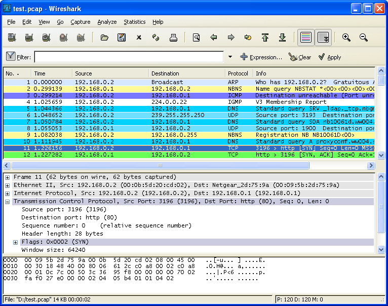

第 1 章 介绍
目录
1.1. 什么是Wireshark
Wireshark 是网络包分析工具。网络包分析工具的主要作用是尝试捕获网络包， 并尝试显示包的尽可能详细的情况。
你可以把网络包分析工具当成是一种用来测量有什么东西从网线上进出的测量工具，就好像使电工用来测量进入电信的电量的电度表一样。（当然比那个更高级）
过去的此类工具要么是过于昂贵，要么是属于某人私有，或者是二者兼顾。 Wireshark出现以后，这种现状得以改变。
Wireshark可能算得上是今天能使用的最好的开元网络分析软件。
1.1.1. 主要应用
下面是Wireshark一些应用的举例：
网络管理员用来解决网络问题
网络安全工程师用来检测安全隐患
开发人员用来测试协议执行情况
用来学习网络协议
除了上面提到的，Wireshark还可以用在其它许多场合。
1.1.2. 特性
支持UNIX和Windows平台
在接口实时捕捉包
能详细显示包的详细协议信息
可以打开/保存捕捉的包
可以导入导出其他捕捉程序支持的包数据格式
可以通过多种方式过滤包
多种方式查找包
通过过滤以多种色彩显示包
创建多种统计分析
…还有许多
不管怎么说，要想真正了解它的强大，您还得使用它才行
图 1.1. Wireshark捕捉包并允许您检视其内容

1.1.3. 捕捉多种网络接口
Wireshark 可以捕捉多种网络接口类型的包，哪怕是无线局域网接口。想了解支持的所有网络接口类型， 可以在我们的网站上找到http://wiki.wireshark.org/CaptureSetup/NetworkMedia.
1.1.4. 支持多种其它程序捕捉的文件
Wireshark可以打开多种网络分析软件捕捉的包，详见???
1.1.5. 支持多格式输出
Wieshark可以将捕捉文件输出为多种其他捕捉软件支持的格式，详见???
1.1.6. 对多种协议解码提供支持
可以支持许多协议的解码(在Wireshark中可能被称为解剖)???
1.1.7. 开源软件
Wireshark是开源软件项目，用GPL协议发行。您可以免费在 任意数量的机器上使用它，不用担心授权和付费问题，所有的源代码在GPL框架下都可以免费使用。因为以上原因，人们可以很容易在Wireshark上添加新的协议，或者将其作为插件整合到您的程序里，这种应用十分广泛。
1.1.8. Wireshark不能做的事
Wireshark不能提供如下功能
Wireshark不是入侵检测系统。如果他/她在您的网络做了一些他/她们不被允许的奇怪的事情，Wireshark不会警告您。但是如果发生了奇怪的事情，Wireshark可能对察看发生了什么会有所帮助。 [3]
Wireshark不会处理网络事务，它仅仅是“测量”(监视)网络。Wireshark不会发送网络包或做其它交互性的事情（名称解析除外，但您也可以禁止解析）。
[3] 译者注：因为不是入侵检测之用，所以不会将入侵检测和普通通信区别对待，但是都会体现在网络包里面，如果您有足够的经验，或许能通过监视网络包发现入侵检测
1.2. 系通需求
想要安装运行Wireshark需要具备的软硬件条件...
1.2.1. 一般说明
给出的值只是最小需求，在大多数网络中可以正常使用，但不排除某些情况下不能使用。 [4]
在繁忙的网络中捕捉包将很容塞满您的硬盘！举个简单的例子：在100MBIT/s全双工以太网中捕捉数据将会产生750MByties/min的数据！在此类网络中拥有高速的CPU，大量的内存和足够的磁盘空间是十分有必要的。
如果Wireshark运行时内存不足将会导致异常终止。可以在http://wiki.wireshark.org/KnownBugs/OutOfMemory察看详细介绍以及解决办法。
Wireshark作为对处理器时间敏感任务，在多处理器/多线程系统环境工作不会比单独处理器有更快的速度，例如过滤包就是在一个处理器下线程运行，除了以下情况例外：在捕捉包时“实时更新包列表”，此时捕捉包将会运行在一个处理下，显示包将会运行在另一个处理器下。此时多处理或许会有所帮助。[5]
1.2.2. Microsoft Windows
Windows 2000,XP Home版,XP Pro版,XP Tablet PC，XP Media Center, Server 2003 or Vista(推荐在XP下使用)
32-bit奔腾处理器或同等规格的处理器（建议频率：400MHz或更高）,64-bit处理器在WoW64仿真环境下-见一般说明
128MB系统内存（建议256Mbytes或更高）
75MB可用磁盘空间（如果想保存捕捉文件，需要更多空间） 800600（建议12801024或更高）分辨率最少65536(16bit)色，(256色旧设备安装时需要选择”legacy GTK1”)
网卡需求：
以太网：windows支持的任何以太网卡都可以
无线局域网卡：见MicroLogix support list, 不捕捉802.11包头和无数据桢。
说明
基于以下三点原因，将不会对旧版Windows提供支持：没有任何开发人员正在使用那些操作系统， 这将使支持变得更加困难，Wireshark运行所依赖的库文件（如GTK，WinPCap等）也放弃对它们的支持。 同样，微软也放弃了对它们的技术支持。
Windows 95,98和ME不能运行Wireshark。已知的最后一个可以运行在以上平台的版本是Ethereal0.99.0(需要安装WinPCap3.1),你依然可以使用从: http://ethereal.com/download.html获得。顺便提一下：微软于2006年1月11日停止对98/ME支持。
Windows NT 4.0今后将无法运行Wireshark.最有一个已知版本是Wireshark0.99.4(需安装自带的WinPCap3.1),你依然可以从：http://prdownloads.sourceforge.net/wireshark/wireshark-setup-0.99.4.exe得到它。顺便提一下：微软于2005年12月31日停止对NT 4.0的支持。
Windows CE 及嵌入版windows（NT/XP）不被支持。
64-bit处理器运行Wireshark需要在32bit仿真环境下(称作WoW64),最低需要安装WinPCap4.0。
支持多显示(不知道是显示其还是监视器)安装，但会遇到一些不可预料的问题。
1.2.3. Unix/Linux
Wireshark目前可以运行在许多UNIX平台，系统可以对照上面Windows下的指标。 二进制包最少在以下平台可用：
APPle Mac OSX
Debian GNU/Linux
FreeBSD
NetBSD
OpenPKG
Red Hat Fedora/Enterprise Linux
rPath Linux
Sun Solaris/i386
Sun Solaris/Sparc
如果二进制包在您的平台无法使用，你可以下载源文件并尝试编译它。 希望您能发送邮件到wireshark-dev[AT]wireshark.org .分享您的经验。
[4] 译者注：原文 “The values below are the minimum requirements and only "rules of thumb" for use on a moderately used network”，其中”rules of thumb”中译名应该是拇指规则，但网上关于拇指规则解释莫衷一是，大致意思是说：大多数情况下适用，但并非所有情况。这里翻译的有点别扭
[5] 译者注：我对这句话的理解是，正如播放电影一样，高性能的处理器只会增强显示效果，您并不需要将原来30分钟的影片10分钟之内看完。当然，对减少延时还是有作用的。但是感觉这句有点阅读困难，可能翻译的有点问题.
1.4. Wiresahrk简史[6]
1997年以后，Gerald Combs 需要一个工具追踪网络问题并想学习网络知识。所以他开始开发Ethereal (Wireshark项目以前的名称) 以解决以上的两个需要。
Ethereal是第一版，经过数次开发，停顿，1998年，经过这么长的时间，补丁，Bug报告，以及许多的鼓励，0.2.0版诞生了。Ethereal就是以这种方式成功的。
此后不久，Gilbert Ramirez发现它的潜力，并为其提供了底层分析
1998年10月，Guy Harris正寻找一种比TcpView更好的工具，他开始为Ethereal进行改进，并提供分析。
998年以后，正在进行TCP/IP教学的Richard Sharpe 关注了它在这些课程中的作用。并开始研究该软件是否他所需要的协议。如果不行，新协议支持应该很方便被添加。所以他开始从事Ethereal的分析及改进。
从那以后，帮助Ethereal的人越来越多，他们的开始几乎都是由于一些尚不被Ethereal支持的协议。所以他们拷贝了已有的解析器，并为团队提供了改进回馈。
2006年项目Moved House（这句不知道怎么翻译）并重新命名为：Wireshark.
[6] 本段因为有很多协议，程序开发方面的术语，翻译得比较糟糕
1.5. Wireshark开发维护
Wireshark最初由Gerald Combs开发。目前由Wireshark team进行进一步开发和维护。Wireshark team是一个由修补bug提高Wireshark功能的独立成员组成的松散组织。
有大量的成员为Wireshark提供协议分析。同时我们也希望这些活动能持续机芯。通过查看Wireshark帮助菜单下的About,你可以找到为Wireshark提供代码的人员名单，或者你也可以通过Wireshark 网站的authors页面找到。
Wireshark 是开源软件项目，发布遵循GNU General Public Licence (GPL协议),所有源代码可以在GPL框架下免费使用。欢迎您修改Wireshark以便适合您的需要，如果您可以提供您的改进给Wireshark team ，我们将不胜感激。
为Wireshark Team 提供您的改进建议，有以下益处：
如果其他人发现您提供的改进十分有用会肯定它们的价值，您将会得知你曾像Wireshark team 一样帮助过他人
The developers of Wireshark might improve your changes even more, as there's always room for improvement. Or they may implement some advanced things on top of your code, which can be useful for yourself too.
The maintainers and developers of Wireshark will maintain your code as well, fixing it when API changes or other changes are made, and generally keeping it in tune with what is happening with Wireshark. So if Wireshark is updated (which is done often), you can get a new Wireshark version from the website and your changes will already be included without any effort for you.
Wireshar 源代码和二进制kits （二进制工具包？ ）可以根据自己的平台对应下载，网站是：http://www.wireshark.org/download.html.
1.6. 汇报问题和获得帮助
如果您在使用中碰到了问题，或者您需要Wireshark的帮助，有以下几种可能让您有兴趣的方法（当然，还包括这本书）。
1.6.1. 网站
通过访问http://www.wireshark.org你将会发现关于Wireshark许多有用的信息。
1.6.2. 百科全书
Wireshark Wiki (http://wiki.wireshark.org)提供广泛的跟Wireshark以及捕捉包有关信息。你将会发现一些没有被包括在本书内信息，例如：wiki上有解释如何在交换网络捕捉包，同时我们正努力建立协议参考，等等。
最好的事情是，如果对某些知识有独到见解（比如您精通某种协议），您可以通过浏览器编辑它。
1.6.3. FAQ
最经常被问到的问题“Frequently Asked Questions”提供一个经常被问到的问题以及答案的列表。
Read The FAQ
在您发送任何邮件到邮件列表之前，确信您已经阅读了FAQ，因为这里面很可能已经提供了您想问的问题，答案。这将大大节约您的时间（记住，有很多人提交了大量的邮件）。

1.6.4. 邮件列表
下面的几个几个邮件列表，分别属于不同的主题：
Wireshark-users
这是一个Wireshark用户的列表，大家提交关于安装和使用Wireshark的问题，其它人（非常有用）提供的答案。（译者注：其他人当然也是指用户？）
wireshark-announce
这是一个关于程序发布信息的列表，通常每4-8周出现一次。
wireshark-dev
这是一个关于Wireshark开发的邮件列表，如果开始开发协议分析，可以从加入该列表
你可以通过网站http://www.wireshark.org订阅每个邮件列表.简单点击网站左手边的邮件列表链接就可以。邮件同样在网站上可以看到存档。
提示
你可以搜索存档看看有没有人问过跟你一样的问题，或许您的问题已经有了答案。这样您就不必提交邮件以等待别人答复您了。
1.6.5. 报告问题
注意
在您提交任何问题之前，请确定您安装的是最新版本的Wireshark。

当您提交问题的时候，如果您提供如下信息将会对解决问题很有帮助。
Wireshark的版本，及其依赖的库的版本，如GTK+，等等。你可以通过Wireshark –v命令获得版本号。（估计是UNIX/Linux平台）。
运行Wireshark的平台信息。
关于问题的详细描述。
如果您得到错误或者警告信息，拷贝错误信息的文本（以及在此之前或之后的文本，如果有的话），这样其他人可能会发现发生问题的地方。请不要发送诸如：“I got a warning while doing x” [7]，因为这样看起来不是个好主意。
不要发送大文件
不要发送过大的文件（>100KB）到邮件列表，在邮件中附加一个能提供足够数据的记事本就可以。大文件会让很多邮件列表里的那些对您的问题不感兴趣的用户感到恼怒。如果需要，你可以单独发送那些数据给对您问题真正感兴趣，要求您发送数据的人。
不要发送机密信息！
如果您发送捕捉数据到邮件列表，请确定它们不包含敏感或者机密信息，比如密码或者诸如此类的。

1.6.6. 在UNIX/Linux平台追踪软件错误
如果您发送捕捉数据到邮件列表，请确定它们不包含敏感或者机密信息，比如密码或者诸如此类的。
你可以通过如下命令获得追踪信息：
$ gdb `whereis wireshark | cut -f2 -d: | cut -d' ' -f2` core >&bt.txt
backtrace
^D
$
注意
在逐字输入第一行的字符！[8]
注意
追踪是一个GDB命令。你可以在输完第一上以后输入它，但是会没有相应，^D命令（CTL+D）将会退出GDB命令。以上命令让你在当前目录得到一个名为
bt.txt的文本文件，它包含您的bug报告。
注意
如果您缺少GDB，您必须检查您的操作系统的调试器。
你可以发送追踪邮件到wireshark-dev[AT]wireshark.org邮件列表
1.6.7. 在Windows平台追踪软件错误
Windows下无法包含符号文件(.pdb),它们非常大。因此不太可能创建十分有意义的追踪文件。你将汇报软件错误就像前面描述的其他问题一样。（这句不尽人意）
[7] 译者注：那句话的意思是，我在XX时碰到一个警告信息
[8] 译者注：原文是："Type the characters in the first line verbatim! Those are back-tics there!",Those are back-tics there!不知道是什么意思，back-tics=后勤抽搐？熟悉Linux的或许知道